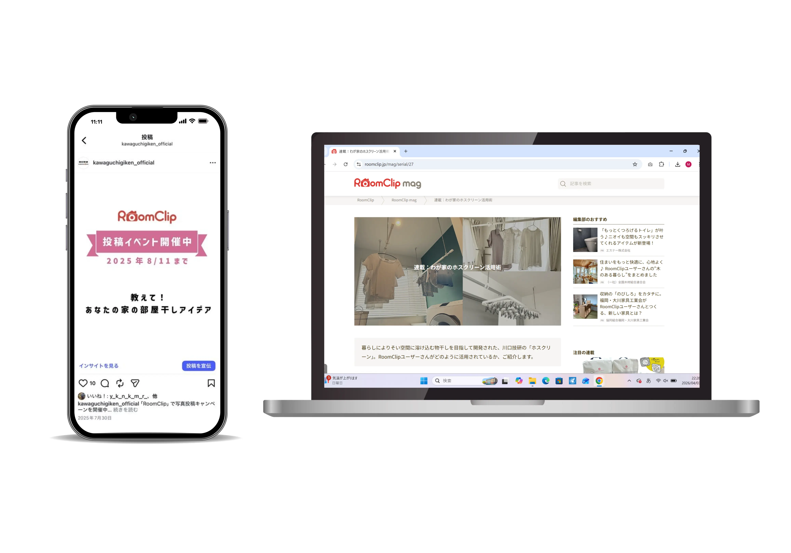
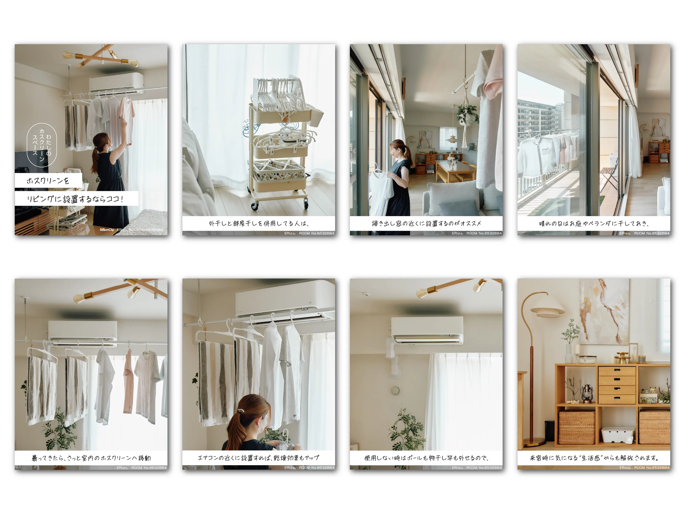
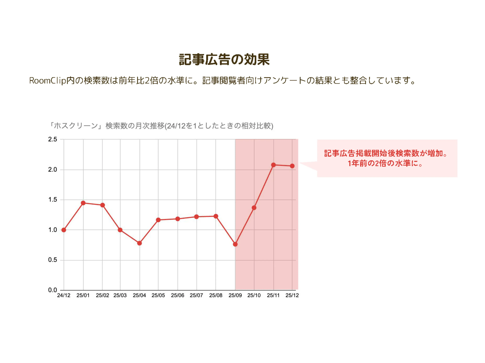

SNS
「物干金物」ブランド認知拡大のためのSNS施策
企画・ディレクション:RoomClipへの施策依頼、施策全体のスケジュール管理
コンテンツ監修：ユーザー取材内容、記事チェック
クロスチャンネル展開：取材コンテンツの再編集、自社Instagramへの展開

概要・課題
主力製品である「室内物干ホスクリーン」は、BtoB市場では高いシェアを持つ一方、施主（一般消費者）への直接的なブランド認知には伸び代がありました。「家を建てる前・リフォーム前」の潜在層へリーチし、ブランド指名買いを増やすため、住まいに関心のある層が定着しているSNS「RoomClip」を活用したプロモーションをリードしました。
こだわり・戦略
UGC（ユーザー投稿）の活性化：
広告配信ではなく、共感を生む「ユーザー参加型」の投稿イベントをRoomClip内で実施。既存ユーザーに愛用シーンを投稿してもらうことで、リアリティのある使用シーン（暮らしの風景）を大量に創出。潜在層が「自分の家でも使いたい」と自分事化できる仕掛けを作りました。
記事コンテンツRoomClip mag連載：
ユーザー宅への取材・撮影を行い、「なぜホスクリーンを選んだのか」「暮らしがどう変わったか」を深堀した記事を連載。機能性だけでなく、ブランドの情緒的価値を可視化しました。
クリエイティブ管理：
自社コンテンツとの整合性が取れるように撮影カットや記事トーンの検修を徹底しました。

